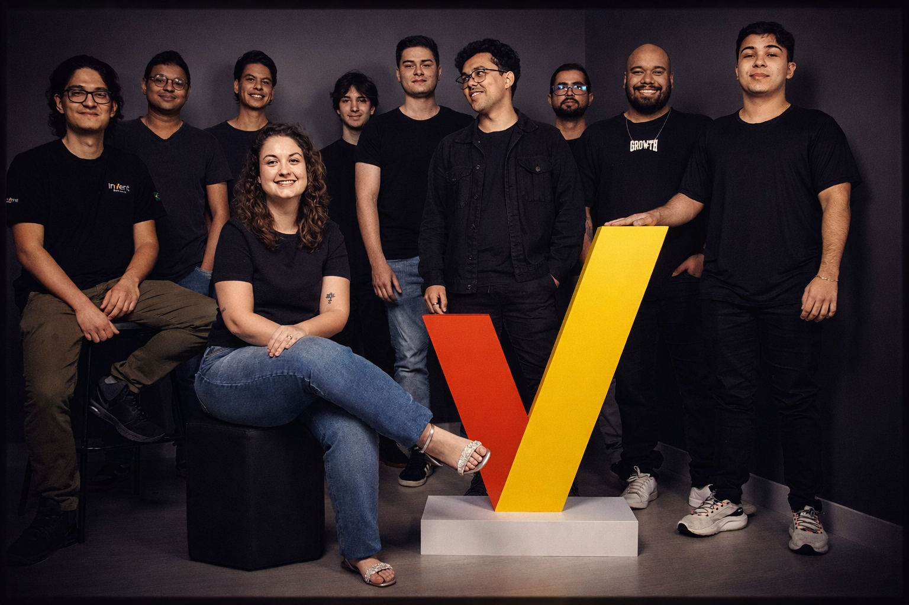
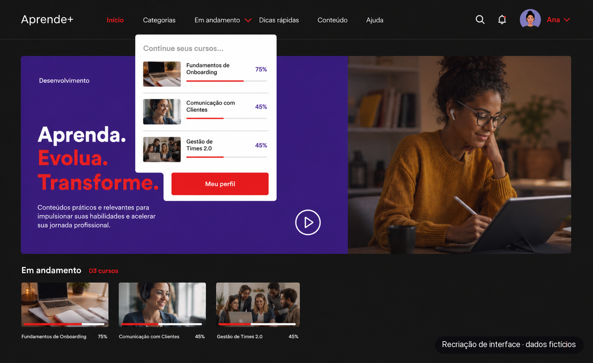
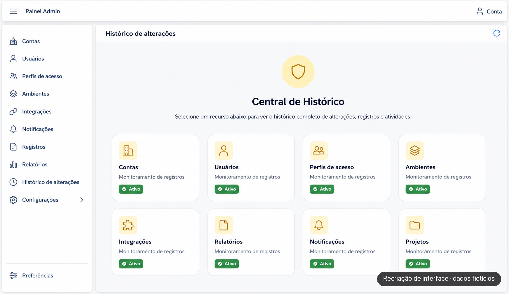
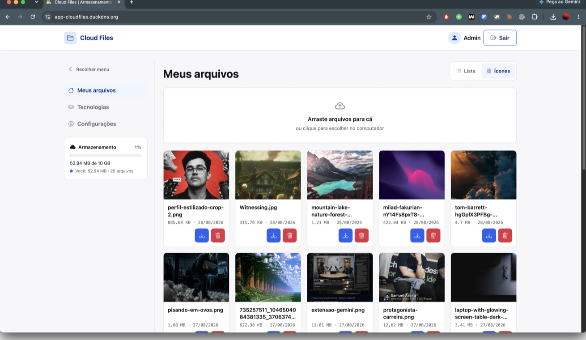
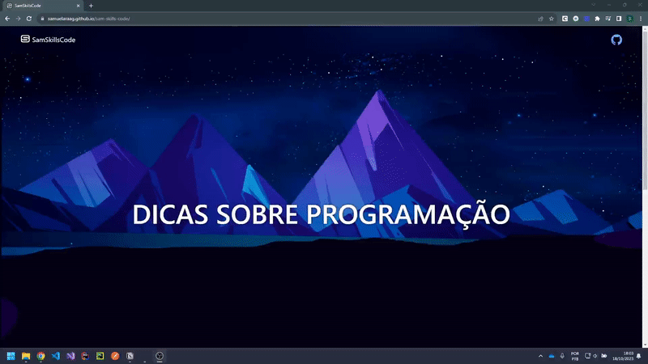

Samuel Araag
Senior Software Engineer | Especialista .NET
Engenharia de software de ponta a ponta, da concepção e decisões arquiteturais ao go-live e à evolução de sistemas distribuídos de alta performance.
Projetos
Aplicações corporativas
Sobre mim
Atuo como Especialista em Desenvolvimento de Software, com foco em backend, arquitetura de software e sistemas distribuídos. Conduzo produtos de ponta a ponta, das definições com stakeholders à implementação, ao go-live e à evolução contínua, avaliando trade-offs de escala, prazo, custo e manutenção.
Entre as iniciativas recentes, conduzi a modularização e a evolução para a nuvem de uma solução fiscal. O MVP entrou em produção em aproximadamente dois meses, com processamento assíncrono via Amazon SQS e suporte a lotes superiores a 900 mil transações.
Aplico engenharia de software assistida por IA com Codex e Claude, seguindo práticas de Specification Driven Development no planejamento, na compreensão do domínio e na criação de testes unitários, de frontend e E2E. As decisões arquiteturais, a validação técnica e a qualidade final permanecem sob minha responsabilidade.
Experiências Profissionais
Especialista em Desenvolvimento de SoftwareAtual
Atuo como referência técnica no ciclo completo de engenharia de software, liderando o desenho e a construção de soluções de alta complexidade.
- Conduzi a modularização e a evolução para AWS de uma solução fiscal, levando o MVP à produção em aproximadamente dois meses.
- Projeto APIs REST versionadas, integrações e processamento assíncrono com Amazon SQS, workers e arquiteturas orientadas a eventos.
- Atuo em sistemas críticos com lotes superiores a 900 mil transações, priorizando escalabilidade, responsividade e resiliência operacional.
- Uso Codex e Claude com Specification Driven Development no planejamento, na análise de domínio e na ampliação da cobertura de testes.
Software Engineer | Liderança Técnica
Liderei tecnicamente um time .NET que cresceu de 2 para 4 profissionais, apoiando sua evolução e a entrega de projetos corporativos.
- Coordenei a evolução da Invent University e da plataforma de licenciamento de add-ons, da concepção das demandas à entrega.
- Defini arquiteturas baseadas em Clean Architecture, DDD e SOLID, com foco em escalabilidade, testabilidade e manutenção.
- Conduzi code reviews, mentoria e resolução de bloqueios complexos junto ao time.
- Atuei com Product Owners e stakeholders na análise de requisitos, priorização e desenho de soluções.
Analista de Desenvolvimento de Software
Desenvolvi e evoluí aplicações corporativas em C#, .NET e Angular, atuando em backend, frontend e análise de requisitos.
- Otimizei índices e consultas no RavenDB, reduzindo em aproximadamente 90% o tempo de resposta em operações críticas.
- Atuei como ponto focal técnico da Invent University, garantindo sustentação e evolução funcional.
- Orientei estagiários e desenvolvedores juniores e participei do desenho arquitetural de novas funcionalidades.
Técnico em Desenvolvimento de Software
Desenvolvi APIs REST em C# e .NET, aplicando SOLID, Clean Code e testes automatizados com xUnit.
- Modelei dados e otimizei consultas no RavenDB para aplicações com grande volume de informações.
- Implementei testes e pipelines de CI/CD no GitLab, automatizando build, validação e entrega.
- Realizei code reviews, apoiei o onboarding e desenvolvi interfaces Angular e TypeScript integradas ao backend.
Estagiário em Desenvolvimento de Software
Apoiei o desenvolvimento e a manutenção de sistemas corporativos com C#, .NET, JavaScript e SAPUI5.
- Desenvolvi e testei APIs REST com xUnit, aplicando fundamentos de TDD.
- Participei de code reviews, refatorações e rotinas ágeis com GitLab, Scrum e Kanban.
Projetos em Destaque
Alguns projetos não têm link: foram feitos em ambiente corporativo, e tanto o código quanto o acesso são privados.
Plataforma de ensino
Plataforma educacional construída do zero, com gestão de cursos com videoaulas, geração de certificado e moderação de comentários com IA.
Projeto corporativo — sem link público

Sistema de auditoria
Registro central das mudanças nas entidades principais, com log de auditoria e histórico navegável por item.
Projeto corporativo — sem link público

Cloud Files
Armazenamento de arquivos em nuvem, com upload por arrastar e soltar, cota por usuário e visualização em lista ou ícones.
Acessar Cloud Files (abre em nova aba)
Sam Skills Code
Base de conhecimento pessoal com dicas de programação, padrões C#, comandos Git e soluções para problemas do dia a dia.
Acessar Sam Skills Code (abre em nova aba)Casos Técnicos & Decisões de Arquitetura
Uma síntese das principais decisões arquiteturais e desafios técnicos superados ao longo da minha trajetória.
Mensageria com RabbitMQ: Desacoplamento e responsabilidade
O projeto PR Manager necessitava de um sistema eficiente para notificações de status, além de estrutura para backups e orquestração de processos.
Modelei um fluxo focado em eventos de domínio utilizando exchanges fanout. A responsabilidade de escutar os eventos foi transferida para consumers independentes, removendo a dependência direta do producer sobre quem receberá a mensagem.
- Trade-offs: aumento da complexidade operacional e maior necessidade de observabilidade em processos assíncronos
- Impacto: desacoplamento real de responsabilidades, escalabilidade horizontal e resiliência via retry e controle de DLQ
Analytics de alta performance: Otimização e modelagem de leitura
Plataforma analítica com grande volume de dados fiscais e uso intenso de dashboards. Com o crescimento da base, consultas começaram a degradar severamente.
Tratei o problema como um erro de modelagem de leitura, e não como falta de otimização. Redesenhei o acesso aos dados utilizando Map Index do RavenDB, pré-processando agregações durante a indexação.
- Trade-offs: custo maior de indexação, consistência eventual
- Impacto: dashboards com resposta quase instantânea, base preparada para escalar
Controle de auditoria - Monitoramento de modificações dentro do sistema
Ambiente regulado com exigência de rastreabilidade clara de alterações.
Avaliei o uso de Revisions do RavenDB por meio de POC em escala real, mas optei por uma collection própria de auditoria, explicitamente modelada no domínio. Isso garantiu um filtro inteligente e agrupamentos simplificados.
- Trade-offs: mais storage e responsabilidade na aplicação
- Impacto: auditorias rápidas, compreensíveis e confiáveis
Plataforma de ensino - Cursos com vídeos e certificados
Plataforma educacional construída do zero, com necessidade de crescimento contínuo.
Implementei validações centralizadas via Action Filters, formulários complexos com FormGroup no Angular, integração direta com a API do Vimeo e migração controlada do Firebase para RavenDB.
- Trade-offs: maior complexidade arquitetural
- Impacto: plataforma preparada para escalar usuários e conteúdos
Moderação de Comentários - IA Assistida
Crescimento da plataforma educacional tornou a moderação manual inviável.
Modelei um fluxo de moderação assistida por IA, onde a decisão final permanece humana, reduzindo carga operacional sem comprometer a experiência do usuário.
- Trade-offs: falsos positivos e dependência de modelos externos
- Impacto: redução operacional com controle e segurança
Processamento em Massa - Estabilidade sob Pressão
Processamento de lotes superiores a 900 mil transações em sistemas fiscais críticos.
Estruturei workers e processos assíncronos para preservar a responsividade das APIs, com reprocessamento e liberação progressiva de recursos para ampliar a resiliência operacional.
- Trade-offs: maior complexidade operacional e necessidade de observabilidade
- Impacto: sistema resiliente e previsível em cenários extremos
Competências Técnicas
Vamos conversar
Parcerias, oportunidades e desafios. Entre em contato nas redes sociais